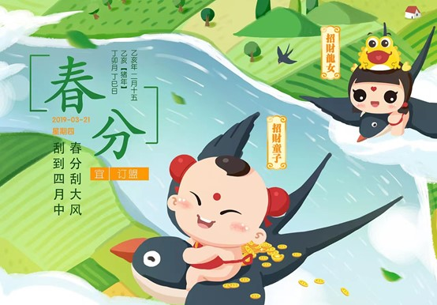

春分

春分，是二十四节气之一，春季第四个节气。斗指壬，太阳黄经达0°，于每年公历3月19-22日交节。春分在天文学上有重要意义，春分这天南北半球昼夜平分，自这天以后太阳直射位置继续由赤道向北半球推移，北半球各地白昼开始长于黑夜，南半球与之相反。在气候上，也有比较明显的特征，中国除青藏高原、东北地区、西北地区和华北地区北部外均进入了明媚的春天。
春分的意义，一是指一天时间白天黑夜平分，各为12小时；二是古时以立春至立夏为春季，春分正当春季3个月之中，平分了春季。春分后，气候温和，雨水充沛，阳光明媚。春分时节，中国民间有放风筝、吃春菜、立蛋等风俗。